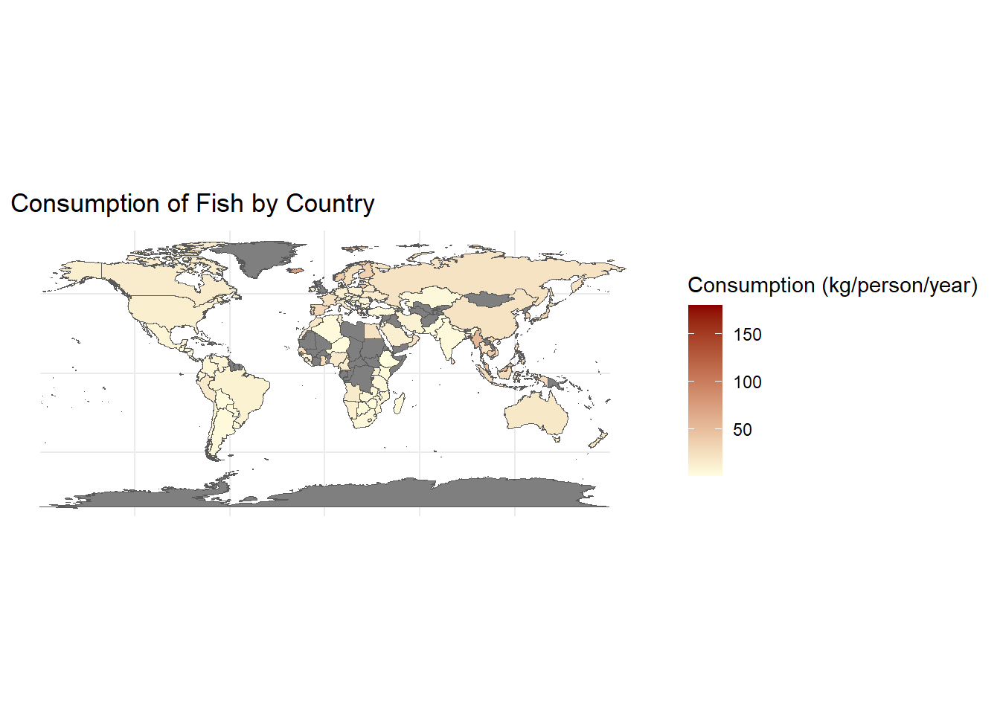
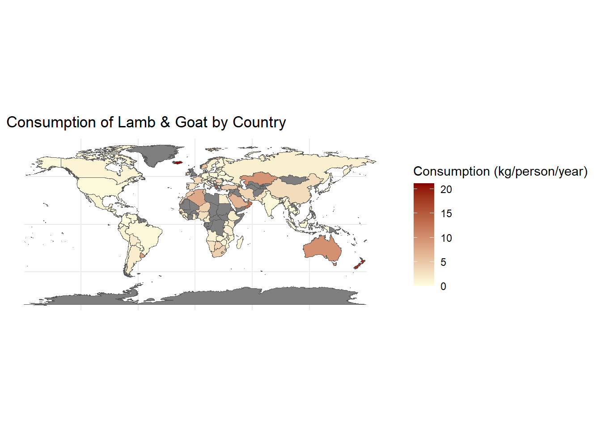
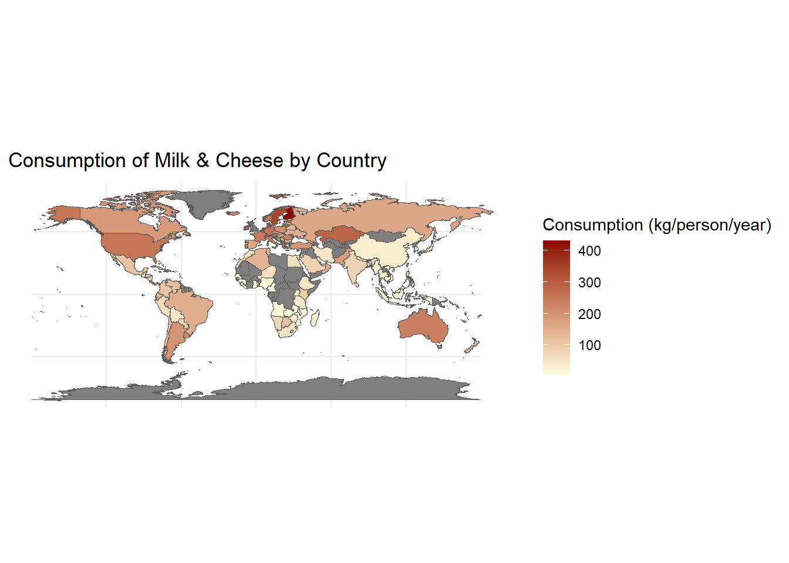
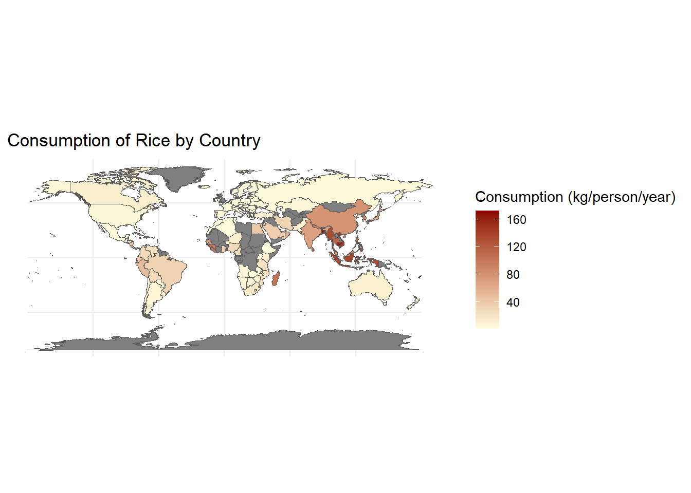
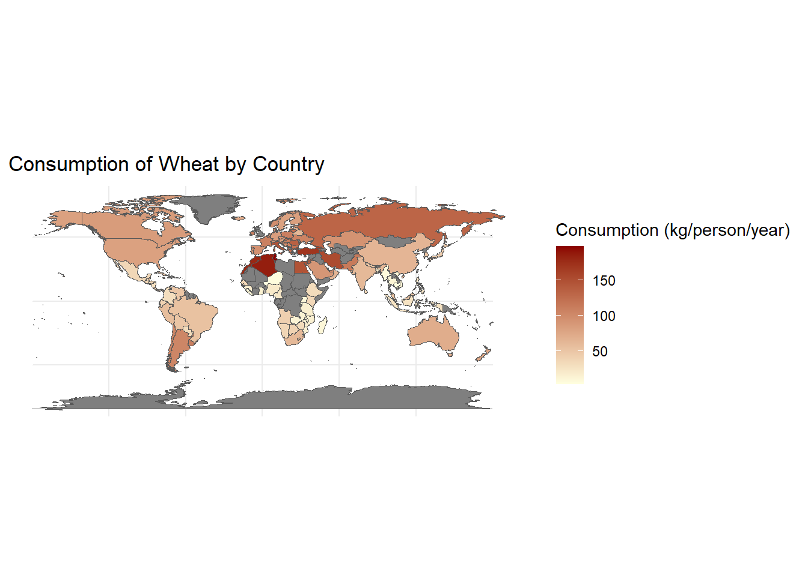

8 Grand Research Question: What does the consumption of each food category in each country look like?
Get Data
$food_consumption
# A tibble: 1,430 × 4
country food_category consumption co2_emmission
<chr> <chr> <dbl> <dbl>
1 Argentina Pork 10.5 37.2
2 Argentina Poultry 38.7 41.5
3 Argentina Beef 55.5 1712
4 Argentina Lamb & Goat 1.56 54.6
5 Argentina Fish 4.36 6.96
6 Argentina Eggs 11.4 10.5
7 Argentina Milk - inc. cheese 195. 278.
8 Argentina Wheat and Wheat Products 103. 19.7
9 Argentina Rice 8.77 11.2
10 Argentina Soybeans 0 0
# ℹ 1,420 more rows
Understand Variables Individually
food_category is a categorical variable so use a bar graph to visualize
consumption is quantitative variable, could use histogram, density, or boxplot to visualize
co2_emmission is quantitative variable, could use histogram, density, or boxplot to visualize
country is categorical variable so could use a bar graph to visualize
8.1 Answering grand research question
There is alot of Beef consumption in Argentina, compared to the rest of the world.
# A tibble: 6 × 4
# Groups: country, food_category [6]
country food_category consumption co2_emmission
<chr> <chr> <dbl> <dbl>
1 Argentina Eggs 11.4 10.5
2 Australia Eggs 8.51 7.82
3 Albania Eggs 12.4 11.4
4 Iceland Eggs 8.24 7.57
5 New Zealand Eggs 9.91 9.1
6 USA Eggs 14.6 13.4




Rice consumption is concentrated mainly in Asia
This is alot of soybean consumption in Zambia, South Korea, and Japan, less in other parts of the world.

There is a lot of Wheat consumption in North Africa
Source Code
---title: "Exam 1"Author: "Cristian Cano"Date: 05/06/2025---# Grand Research Question: What does the consumption of each food category in each country look like?```{r, include=FALSE}knitr::opts_chunk$set(message = FALSE, warning = FALSE, echo = FALSE)library(tidytuesdayR)library(tidyverse)library(sf)library(rnaturalearth)library(maps)```**Get Data**```{r}tuesdata <-tt_load('2020-02-18')head(tuesdata)fc <- tuesdata$food_consumption#head(fc)```**Understand Variables Individually**- food_category is a categorical variable so use a bar graph to visualize- consumption is quantitative variable, could use histogram, density, or boxplot to visualize- co2_emmission is quantitative variable, could use histogram, density, or boxplot to visualize- country is categorical variable so could use a bar graph to visualize## Answering grand research question```{r}library(ggplot2)#Making a new dataset grouping by country and food categoryfc1 <- fc|>group_by(country, food_category)#view(fc1)``````{r}#Filtering for only the food category Beefdf_beef <- fc1 |>filter(food_category =="Beef")#head(df_beef)#Making a world mapworld_map <-map("world", plot =FALSE, fill =TRUE)world_sf <-st_as_sf(world_map)#Joining world map to countryjoined_world_sf_beef <- world_sf |>left_join(df_beef, by =c("ID"="country"))#Mapping consumption of the food categoryjoined_world_sf_beef |>ggplot() +geom_sf(aes(fill = consumption), na.rm =TRUE) +scale_fill_gradient(low ="lightyellow",high ="darkred",name ="Consumption (kg/person/year)" ) +labs(title ="Consumption of Beef by Country") +theme_minimal()```- There is alot of Beef consumption in Argentina, compared to the rest of the world.```{r}df_eggs <- fc1 |>filter(food_category =="Eggs")head(df_eggs)joined_world_sf_eggs <- world_sf |>left_join(df_eggs, by =c("ID"="country"))joined_world_sf_eggs |>ggplot() +geom_sf(aes(fill = consumption), na.rm =TRUE) +scale_fill_gradient(low ="lightyellow",high ="darkred",name ="Consumption (kg/person/year)" ) +labs(title ="Consumption of Eggs by Country") +theme_minimal()``````{r}df_fish <- fc1 |>filter(food_category =="Fish")joined_world_sf_fish <- world_sf |>left_join(df_fish, by =c("ID"="country"))joined_world_sf_fish |>ggplot() +geom_sf(aes(fill = consumption), na.rm =TRUE) +scale_fill_gradient(low ="lightyellow",high ="darkred",name ="Consumption (kg/person/year)" ) +labs(title ="Consumption of Fish by Country") +theme_minimal()``````{r}df_lamb <- fc1 |>filter(food_category =="Lamb & Goat")joined_world_sf_lamb <- world_sf |>left_join(df_lamb, by =c("ID"="country"))joined_world_sf_lamb |>ggplot() +geom_sf(aes(fill = consumption), na.rm =TRUE) +scale_fill_gradient(low ="lightyellow",high ="darkred",name ="Consumption (kg/person/year)" ) +labs(title ="Consumption of Lamb & Goat by Country") +theme_minimal()``````{r}df_milk <- fc1 |>filter(food_category =="Milk - inc. cheese")joined_world_sf_milk <- world_sf |>left_join(df_milk, by =c("ID"="country"))joined_world_sf_milk |>ggplot() +geom_sf(aes(fill = consumption), na.rm =TRUE) +scale_fill_gradient(low ="lightyellow",high ="darkred",name ="Consumption (kg/person/year)" ) +labs(title ="Consumption of Milk & Cheese by Country") +theme_minimal()``````{r}df_nuts <- fc1 |>filter(food_category =="Nuts inc. Peanut Butter")joined_world_sf_nuts <- world_sf |>left_join(df_nuts, by =c("ID"="country"))joined_world_sf_nuts |>ggplot() +geom_sf(aes(fill = consumption), na.rm =TRUE) +scale_fill_gradient(low ="lightyellow",high ="darkred",name ="Consumption (kg/person/year)" ) +labs(title ="Consumption of Nuts (including peaunut butter) by Country") +theme_minimal()``````{r}df_pork <- fc1 |>filter(food_category =="Pork")joined_world_sf_pork <- world_sf |>left_join(df_pork, by =c("ID"="country"))joined_world_sf_pork |>ggplot() +geom_sf(aes(fill = consumption), na.rm =TRUE) +scale_fill_gradient(low ="lightyellow",high ="darkred",name ="Consumption (kg/person/year)" ) +labs(title ="Consumption of Pork by Country") +theme_minimal()``````{r}df_poultry <- fc1 |>filter(food_category =="Poultry")joined_world_sf_poultry <- world_sf |>left_join(df_poultry, by =c("ID"="country"))joined_world_sf_poultry |>ggplot() +geom_sf(aes(fill = consumption), na.rm =TRUE) +scale_fill_gradient(low ="lightyellow",high ="darkred",name ="Consumption (kg/person/year)" ) +labs(title ="Consumption of Poultry by Country") +theme_minimal()``````{r}df_rice <- fc1 |>filter(food_category =="Rice")joined_world_sf_rice <- world_sf |>left_join(df_rice, by =c("ID"="country"))joined_world_sf_rice |>ggplot() +geom_sf(aes(fill = consumption), na.rm =TRUE) +scale_fill_gradient(low ="lightyellow",high ="darkred",name ="Consumption (kg/person/year)" ) +labs(title ="Consumption of Rice by Country") +theme_minimal()```- Rice consumption is concentrated mainly in Asia```{r}df_soybeans <- fc1 |>filter(food_category =="Soybeans")joined_world_sf_soybeans <- world_sf |>left_join(df_soybeans, by =c("ID"="country"))joined_world_sf_soybeans |>ggplot() +geom_sf(aes(fill = consumption), na.rm =TRUE) +scale_fill_gradient(low ="lightyellow",high ="darkred",name ="Consumption (kg/person/year)" ) +labs(title ="Consumption of Soybeans by Country") +theme_minimal()```- This is alot of soybean consumption in Zambia, South Korea, and Japan, less in other parts of the world.```{r fig.alt = "Consumption of Wheat by Country"}df_wheat <- fc1 |> filter(food_category == "Wheat and Wheat Products")joined_world_sf_wheat <- world_sf |> left_join(df_wheat, by = c("ID" = "country"))joined_world_sf_wheat |> ggplot() + geom_sf(aes(fill = consumption), na.rm = TRUE) + scale_fill_gradient( low = "lightyellow", high = "darkred", name = "Consumption (kg/person/year)" ) + labs(title = "Consumption of Wheat by Country") + theme_minimal()```- There is a lot of Wheat consumption in North Africa